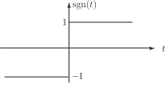
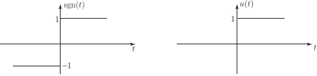

5 Fourier transform of the unit step function
We have already pointed out that although
we cannot simply replace by to obtain the Fourier transform of the unit step.
We proceed via the Fourier transform of the signum function which is defined as
Figure 10

We obtain as follows. Consider the odd two-sided exponential function defined as
where :
Figure 11
By slightly adapting our earlier calculation for the even two-sided exponential function we find
The parameter controls how rapidly the exponential function varies:
Figure 12
As we let the exponential function resembles more and more closely the signum function.
This suggests that
Task!
Write the unit step function in terms of the signum function and hence obtain
First express in terms of :
Now, using the linearity property of Fourier transforms and previously obtained Fourier transforms, find
From the graphs

the step function can be obtained by adding 1 to the signum function for all and then dividing the resulting function by 2 i.e.
Now, using the linearity property and previously obtained Fourier transforms, find
We have, using linearity,
Thus, the Fourier transform of the unit step function contains the additional impulse term as well as the odd term
Exercises
-
Use Parserval’s theorem and the Fourier transform of a ‘two-sided’ exponential function to show that
-
Using
find the Fourier transforms of
-
Hence obtain the transforms of
-
Show that
Verify your result using inverse Fourier transform properties.
-
- (by the duality property)
-
(Using time differentiation property in (b), (c) and (d).)